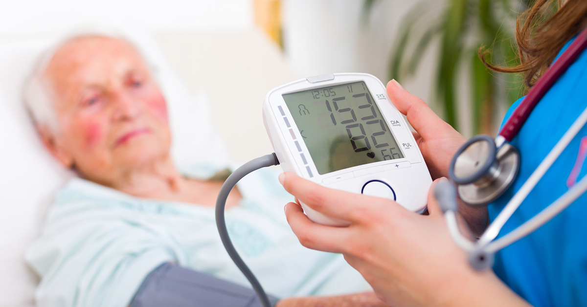
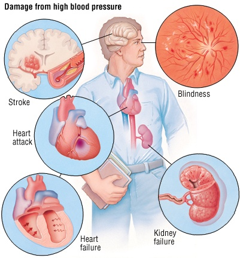
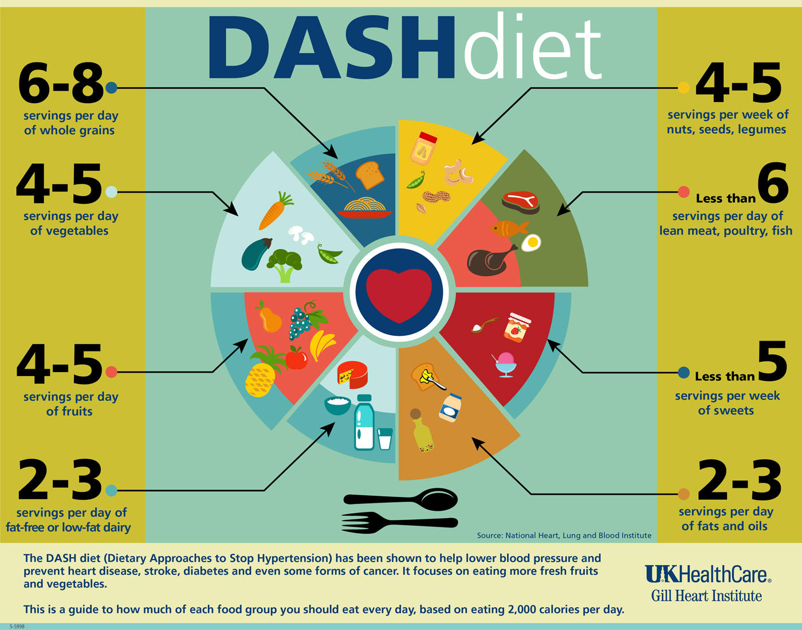

" โรคความดันโลหิตสูง " สำคัญฉไน !

ที่มา : https://greenvalleynaturalsolutions.com/when-high-blood-pressure-isnt-really-high-at-all-2/
สาเหตุของการเกิดโรคความดันโลหิตสูง
1. ผู้ป่วยที่เป็นโรคความดันโลหิตสูงส่วนใหญ่ประมาณ 90-95% แพทย์จะตรวจไม่พบโรค หรือภาวะผิดปกติ หรือสิ่งที่เป็นต้นเหตุของความดันโลหิตสูง เรียกว่า
“ความดันโลหิตสูงชนิดปฐมภูมิ” (Primary hypertension) หรือ
“ความดันโลหิตสูงชนิดไม่ทราบสาเหตุแน่ชัด” (Essential hypertension) เมื่อกล่าวถึงโรคความดันโลหิตสูงเรามักจะหมายถึงโรคความดันโลหิตสูงชนิดนี้เป็นหลัก
2. ผู้ป่วยที่เป็นโรคความดันโลหิตสูงส่วนน้อยประมาณ 5-10% แพทย์อาจตรวจพบโรค หรือภาวะผิดปกติ หรือสิ่งที่เป็นสาเหตุของความดันโลหิตสูงได้ ซึ่งเรียกว่า
“ความดันโลหิตสูงชนิดทุติยภูมิ” (Secondary hypertension) หรือ “ความดันโลหิตสูงชนิดทราบสาเหตุ”
3. ความดันช่วงบนสูงเดี่ยว มักพบในผู้สูงอายุ (ยิ่งมีอายุมากเท่าไหร่ก็จะยิ่งมีโอกาสพบได้มากขึ้นเท่านั้น), ภาวะหลอดเลือดแดงใหญ่ตีบ (Coarctation of aorta), ลิ้นหัวใจเอออร์ติกรั่ว (Aortic insufficiency), โรคคอพอกเป็นพิษ (Toxic goiter)
4. ความดันโลหิตสูงเพียงชั่วคราว ความดันโลหิตอาจสูงเพียงชั่วคราวได้เมื่อมีภาวะที่ทำให้หัวใจต้องทำงานหนักขึ้น เช่น ไข้ ซีด เกิดอารมณ์เครียด (เช่น โกรธ ตื่นเต้น), ออกกำลังกายใหม่ ๆ ฯลฯ ซึ่งไม่จำเป็นต้องรักษาแต่อย่างใด และความดันจะกลับมาเป็นปกติได้เองเมื่อปัจจัยเหล่านี้ได้หมด
ปัจจัยเสี่ยงต่อการเกิดโรคความดันโลหิตสูง
> พันธุกรรม โอกาสจะสูงมากขึ้นเมื่อมีคนในครอบครัวเป็นโรคนี้
> การนอนกรน เป็นสาเหตุของความดันโลหิตสูงที่พบได้บ่อยที่สุด ประมาณร้อยละ 50 ของผู้ป่วยโรคความดันโลหิตสูง ที่ทราบสาเหตุ
> อายุที่มากขึ้น
> น้ำหนักตัวเกินและโรคอ้วน เพราะเป็นสาเหตุของโรคเบาหวานและโรคหลอดเลือดต่าง ๆ ตีบจากภาวะไขมันเกาะผนังหลอดเลือด
> การขาดการออกกำลังกาย เพราะเป็นปัจจัยเสี่ยงของโรคอ้วนและเบาหวาน
> การรับประทานอาหารเค็มอย่างต่อเนื่อง
> การสูบบุหรี่ เพราะสารพิษในควันบุหรี่ส่งผลให้เกิดการอักเสบตีบตันของหลอดเลือดต่าง ๆ รวมทั้งหลอดเลือดหัวใจและหลอดเลือดไต
> การดื่มแอกอฮอล์ เพราะส่งผลให้หัวใจเต้นแรงกว่าปกติและมีโอกาสเป็นโรคความดันโลหิตสูงถึงประมาณ 50% ของผู้ที่ติดสุราทั้งหมด เป็นต้น

ที่มา : https://m3globalresearch.blog/tag/hemophilia-b//
ภาวะแทรกซ้อนของโรคความดันโลหิตสูง
หากไม่ได้รับการักษาหรือปล่อยให้ความโลหิตสูงเป็นเวลานาน ๆ ผู้ป่วยมักจะเกิดความผิดปกติของอวัยวะที่สำคัญต่าง ๆ ตามมา เช่น สมอง ประสาทตา หัวใจ ไต หลอดเลือดแดงใหญ่ และหลอดเลือดแดงส่วนปลาย ซึ่งจะส่งผลให้เกิดความพิการและเสียชีวิตได้ เนื่องจากความดันโลหิตสูงจะทำให้หลอดเลือดแดงแทบทุกส่วนของร่างกายเสื่อม เกิดภาวะหลอดเลือดแดงแข็ง (Atherosclerosis) หลอดเลือดตีบ เลือดไปเลี้ยงอวัยวะไม่ได้ โดยภาวะแทรกซ้อนที่สำคัญนั้น ได้แก่
> สมอง อาจเกิดภาวะหลอดเลือดสมองตีบหรือแตก กลายเป็นโรคอัมพาตครึ่งซีกซึ่งเป็นภาวะแทรกซ้อนที่พบได้บ่อย บางรายถ้าเป็นเรื้อรังอาจกลายเป็นโรคความจำเป็นเสื่อม สมาธิลดลง นอกจากนี้ ในรายที่มีหลอดเลือดฝอยในสมองส่วนสำคัญแตกก็อาจทำให้เสียชีวิตได้อย่างรวดเร็ว หรือในรายที่มีความดันโลหิตสูงรุนแรงที่เกิดขึ้นอย่างฉับพลันก็อาจทำให้เกิดอาการปวดศีรษะ ซึม เพ้อ ชัก หรือหมดสติได้ ซึ่งเรียกว่า
“Hypertensive encephalopathy”
> หัวใจ จะทำให้หัวใจห้องล่างซ้ายโต (LVH) ซึ่งถ้าปล่อยให้เป็นมากขึ้นจะทำให้เกิดภาวะแทรกซ้อนร้ายแรงอื่น ๆ เกี่ยวกับหัวใจตามมาได้ และโรคนี้ยังอาจทำให้หลอดเลือดที่เลี้ยงหัวใจตีบกลายเป็นโรคหัวใจขาดเลือด มีอาการเจ็บแน่นหน้าอก ซึ่งถ้าเป็นรุนแรงอาจเกิดโรคกล้ามเนื้อหัวใจตาย นอกจากนี้ ยังอาจทำให้เกิดภาวะหัวใจวาย ซึ่งจะทำให้มีอาการบวม หอบเหนื่อย นอนราบไม่ได้ ส่วนในรายที่มีความดันโลหิตสูงรุนแรง อาจตรวจพบหัวใจเต้นมากกว่า 120 ครั้งต่อนาที และจังหวะไม่สม่ำเสมอจากหัวใจห้องบนเต้นแผ่นระรัว
> ตา จะเกิดภาวะเสื่อมของหลอดเลือดแดงภายในลูกตาอย่างช้า ๆ ในระยะแรกหลอดเลือดจะตีบ แต่ต่อมาอาจแตกมีเลือดออกที่ตา ทำให้ประสาทตาเสื่อม ตามัวลงเรื่อย ๆ จนถึงขั้นตาบอดได้
> ไต อาจเกิดภาวะไตวายเรื้อรัง เนื่องจากหลอดเลือดแดงแข็ง เลือดไปเลี้ยงไตไม่พอ ซึ่งไตที่วายจะยิ่งทำให้ความโลหิตของผู้ป่วยสูงขึ้น กลายเป็นวงจรที่เลวร้าย
> หลอดเลือดแดงใหญ่และหลอดเลือดแดงส่วนปลาย หลอดเลือดแดงใหญ่เกิดภาวะหลอดเลือดแดงแข็ง ทำให้เกิดภาวะหลอดเลือดแดงใหญ่โป่งพอง และภาวะเลือดเซาะผนังหลอดเลือดแดงใหญ่ ซึ่งอาจทำให้เกิดอันตรายถึงเสียชีวิตได้ นอกจากนี้ หลอดเลือดแดงส่วนที่มาเลี้ยงขาและปลายเท้าอาจเกิดภาวะแข็งตัวและตีบได้ (โดยเฉพาะอย่างยิ่งในผู้ป่วยที่มีการสูบบุหรี่ร่วมด้วย) ทำให้เลือดไปเลี้ยงที่ขาและปลายเท้าได้น้อย อาจเป็นตะคริวบ่อย หรือปวดน่องขณะเดินมาก ๆ หากหลอดเลือดแดงเกิดการอุดตันก็อาจทำให้เนื้อเยื่อบริเวณนั้นขาดเลือดจนกลายเป็นเนื้อตายเน่า (Gangrene) ได้
ภาวะแทรกซ้อนเหล่านี้จะเกิดขึ้นรวดเร็วหรือรุนแรงเพียงใดนั้นจะขึ้นอยู่กับความรุนแรงและระยะของโรค ถ้าผู้ป่วยสามารถควบคุมความดันให้อยู่ในเกณฑ์ปกติได้ก็อาจป้องกันภาวะแทรกซ้อนเหล่านี้ได้หรือทำให้ภาวะแทรกซ้อนที่เกิดขึ้นลดความรุนแรงลงได้ ส่วนในรายที่เป็นเพียงเล็กน้อย หากปล่อยทิ้งไว้ไม่รักษาการเกิดภาวะแทรกซ้อนก็อาจใช้เวลานานถึง 7-10 ปี แต่ในรายที่มีความดันสูงมาก ๆ ก็อาจทำให้เกิดภาวะแทรกซ้อนได้รวดเร็ว และผู้ป่วยอาจเสียชีวิตได้ภายในระยะเวลาเพียงไม่กี่ปี (ถ้ารุนแรงมากอาจเสียชีวิตภายใน 6-8 เดือน) นอกจากนี้ ผู้ป่วยที่สูบบุหรี่หรือดื่มแอลกอฮอล์จัด มีโรคอื่นร่วมด้วย (เช่น โรคเบาหวาน ภาวะไขมันในเลือดผิดปกติ) ก็อาจเกิดภาวะแทรกซ้อนได้เร็วยิ่งขึ้น ผู้ป่วยจึงควรปรับเปลี่ยนพฤติกรรมและควบคุมโรคเหล่านี้ควบคู่กันไปด้วย
โรคความดันโลหิตสูงเป็นโรคที่มักไม่มีอาการแสดง ยกเว้นผู้ป่วยในระยะรุนแรงที่อาจมีอาการแสดงได้ เช่น ปวดศีรษะรุนแรง หายใจสั้น มีเลือดกำเดาไหล ฯลฯ ซึ่งอาการเหล่านี้จะเป็นอาการที่ไม่เฉพาะเจาะจงและบอกไม่ได้ชัดเจน และส่วนใหญ่ของอาการจากโรคก็เป็นอาการจากภาวะแทรกซ้อน เช่น จากโรคหัวใจ โรคหลอดเลือดสมอง หรือเป็นอาการจากโรคที่เป็นปัจจัยเสี่ยง เช่น โรคเบาหวาน โรคอ้วน หรือเป็นอาการจากโรคที่เป็นสาเหตุ เช่น โรคเนื้องอกต่อมใต้สมอง จึงทำให้โรคนี้ถูกเรียกว่าเป็น “เพชรฆาตเงียบ” (Silent killer) ที่ทำให้ผู้ป่วยเสียชีวิตได้อย่างไม่ทันได้ระวังตัว ผู้ป่วยจึงต้องหมั่นตรวจสุขภาพและวัดความดันโลหิตอย่างสม่ำเสมอ
การปรับพฤติกรรมของผู้ป่วยความดันโลหิตสูง

ที่มา : http://destetic.com/blog/dash-la-mejor-dieta-del-2015/
> บริโภคอาหารควบคุมความดัน หรือ อาหารแดช (Dietary approaches to stop hypertension – DASH Diet) ซึ่งเป็นวิธีการกินอาหารที่ผู้เชี่ยวชาญยกให้เป็นสุดยอดการป้องกันและรักษาโรคนี้ โดยการเน้นรับประทานผักและผลไม้ที่มีกากใยสูง (เพราะมีโพแทสเซียมมาก ซึ่งจะส่งผลดีต่อการควบคุมความดัน) ผลิตภัณฑ์นมที่มีไขมันต่ำ เมล็ดธัญพืช ถั่วต่าง ๆ ปลาที่อุดมไปด้วยกรดไขมันที่ดีต่อร่างกายให้มาก ๆ ลดการบริโภคเนื้อสัตว์ใหญ่ (เนื้อแดง) แป้ง น้ำตาล ของหวาน ไขมันอิ่มตัวและคอเลสเตอรอล และลดการบริโภคอาหารเค็มหรือโซเดียม (เช่น ไข่เค็ม เนื้อเค็ม ปลาเค็ม น้ำพริก กะปิ ปลาร้า หนำเลี้ยบ อาหารที่ใส่หรือจิ้มเกลือ ของดองเกลือ น้ำปลา ซีอิ๊ว หรือซอสที่มีรสเค็ม ฯลฯ) โดยการจำกัดเกลือแกง (โซเดียมคลอไรด์) ให้น้อยกว่าวันละ 6 กรัม หรือ 1 ช้อนชา และลดการบริโภคอาหารที่ใส่ผงฟู (เช่น ขนมปัง ขนมสาลี่ ขนมถ้วยฟู) ผงชูรส และสารกันบูด (เช่น อาหารกระป๋อง อาหารสำเร็จรูป) รวมทั้งโซเดียมไบคาร์บอเนต (เช่น ยาธาตุน้ำแดง ยาเม็ดโซดามินต์) และ
งดหรือลดการดื่มเครื่องดื่มแอลกอฮอล์ โดยผู้ชายให้ดื่มได้ไม่เกินวันละ 2 หน่วยการดื่ม (Drink) ซึ่งเทียบเท่ากับวิสกี้ 90 มิลลิลิตร ไวน์ 300 มิลลิลิตร หรือเบียร์ 720 มิลลิลิตร ส่วนผู้หญิงให้ดื่มได้ไม่เกิน 1 หน่วยการดื่ม
> งดการสูบบุหรี่ รวมถึงการใช้ยาเม็ดคุมกำเนิด
> ลดน้ำหนักให้มีดัชนีมวลกาย (BMI) น้อยกว่า 25 กก./ม.2 (หรือถ้าลดได้น้อยกว่า 23 กก./ม.2 เลยได้ยิ่งดี)
> หมั่นออกกำลังกายแบบแอโรบิกเป็นประจำให้ได้เกือบทุกวัน เช่น เดินเร็ว วิ่งเหยาะ ขี่จักรยาน ว่ายน้ำ อย่างน้อยวันละ 30 นาที
> กษาสุขภาพจิตให้ดี ไม่เครียด เข้าใจและยอมรับชีวิต รวมถึงการหมั่นฝึกผ่อนคลายความเครียดและบริหารสุขภาพจิตอยู่เสมอ เช่น สวดมนต์ ทำสมาธิ โยคะ รำมวยจีน ชี่กง ร้องเพลง เล่นดนตรี หรือทำงานอดิเรกต่าง ๆ ฯลฯ
ที่มา : เมดไทย (MedThai)